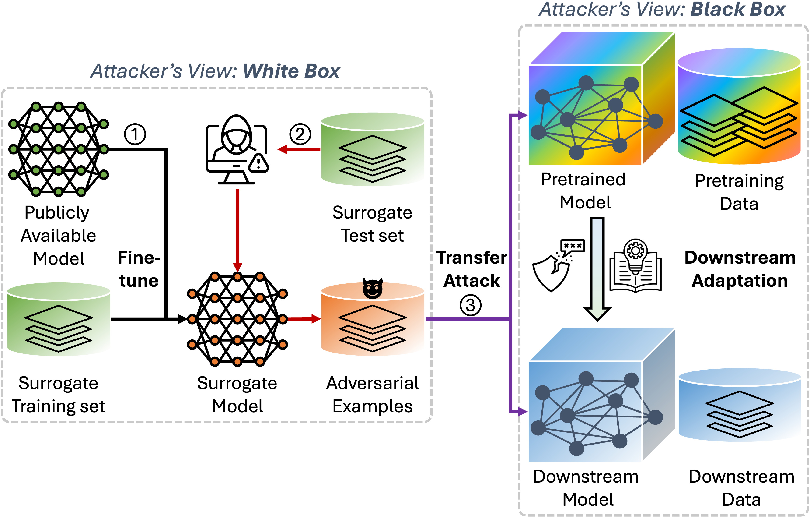

TDSC 2026
TriXfer: Triple-Cross Transfer Attack on Vision Transformer–Adapted Downstream Classifiers
Adversarial vulnerabilities in pretrained Vision Transformers can propagate to the downstream classifiers built on them. TriXfer is the first untargeted triple-cross transfer attack: adversarial examples crafted on clean surrogate data transfer across model architectures, datasets, and label spaces at once, even when both the pretrained ViT and the downstream classifier are black boxes. Experiments across supervised, self-supervised, and vision-language backbones reveal persistent inherited vulnerabilities.